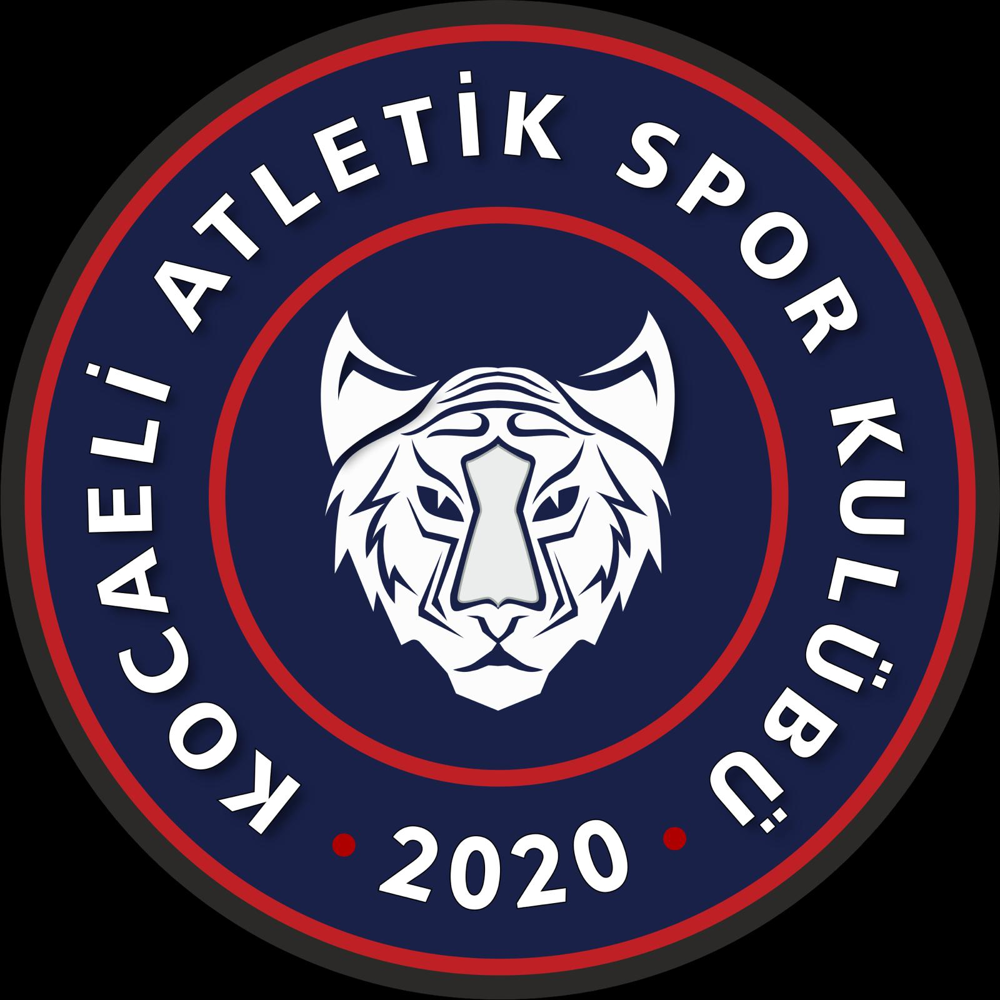

Spor Kulübü
Oyuncu Gelişim
RAPORU
2025 – 2026 SEZONU
ÇINAR
CANER
Kocaeli Atletik U9/U10
01
1
Kimlik – Genetik – Sağlık
Sporcu Kimlik Bilgileri
👤Ad SoyadÇınar Caner
🎂Doğum Tarihi13.10.2017
📅Yaş8
⚥CinsiyetErkek
📏Ölçüm Tarihi2026
🏀TakımKocaeli Atletik U9/U10
✋Dominant ElSağ
🎯Pozisyon1 – Oyun Kurucu
🏃Antrenman KatılımYüksek
📚Akademik DurumBaşarılı
Genetik Bilgiler
Baba Boyu182 cm
Anne Boyu175 cm
Hedef Boy (Genetik)183.5 ± 8 cm
Anne ve baba boy ortalaması yüksek atletik potansiyele işaret etmektedir. Uzun dönem takip önerilir.
Sağlık Bilgileri
Kronik RahatsızlıkYok
AlerjiVar *
Düzenli İlaç KullanımıYok
* Net tanı bulunmuyor
⚠ Veri Güvenirliği
2025 kulaç, bel ve omuz ölçümlerinde hata şüphesi vardır; 2026 referans alınmıştır. Yöntem: Standart Antropometrik Ölçüm.
02
2
Antropometrik Değerlendirme
Fiziksel Ölçümler
| Ölçüm | 2025 | 2026 | Değişim |
|---|
| 🦴 Boy | 133 cm |
135 cm |
↑ +2 cm |
| ⚖️ Kilo | 27 kg |
30 kg |
↑ +3 kg |
| 🤲 Kulaç | 50* cm |
139 cm |
— hata |
| 📐 Bel | 23* cm |
65 cm |
— hata |
| 💪 Omuz | 12* cm |
35 cm |
— hata |
| 🦵 Bacak | 75 cm |
82 cm |
↑ +7 cm |
* 2025 ölçüm hatası, 2026 referans.
Vücut Oranları (2026)
Bilimsel Değerlendirme
Çınar'ın boy uzaması hızı, kilo artışı ve vücut oranları yaşlarına göre ideal aralıktadır. Özellikle bacak uzunluğu ve kulaç uzunluğu izlenmelidir. Düzenli antrenman ile fiziksel gelişimi olumlu sürecektir.
03
Teknik Beceriler
Sol El Gelişimi
Sezonun ikinci yarısında belirgin gelişim göstermiştir ancak hâlâ ana gelişim alanlarından biridir.
Sağ El Bitirişleri
Sağ el bitiriş repertuvarı sezon boyunca istikrarlı şekilde gelişmiştir.
Şut Mekaniği
Orta seviyededir. Tekrar ve özgüvenle birlikte gelişmesi beklenmektedir.
Top Advance
Sorumluluk alarak topu taşımaktadır, daha kaliteli kararlarla geliştirmelidir.
Skip & Go
Yaş grubuna göre iyi seviyede kullanılmaktadır.
Ball Handling
Özellikle sol el ve yön değiştirmelerde ek bireysel çalışma önerilir.
Akselerasyon
Hız değişimlerini ve tempo kontrolünü etkili kullanabilmektedir.
Güçlü Yön
Gelişim Alanı
Görsel Değerlendirme
04
4
Taktik & Zihinsel Analiz
⚡ Taktiksel Beceriler
Basketbol IQ
Oyun okuma ve çözüm üretme konusunda takımın öne çıkan oyuncularındandır.
Yardım Savunması
2v1 ve yardım savunmalarında doğru kararlar verebilmektedir.
Liderlik
Takım arkadaşlarını konuşarak yönlendiren doğal bir saha içi lideridir.
Mücadele Gücü
Kaybetmekten hoşlanmayan ve son ana kadar mücadele eden karaktere sahiptir.
Temaslı Oyun
Teması seven ve fiziksel oyundan kaçmayan bir profildir.
Savunma Kimliği
Sezon boyunca skordan çok savunması ve enerjisiyle öne çıkmıştır.
Güçlü Yön
Gelişim Alanı
🧠 Zihinsel & Duygusal Beceriler
Motivasyon
Antrenman ve maçlarda motivasyonu yüksek.
Odaklanma
Antrenman ve maçlarda odağı çok iyi.
Özgüven
Kendine güveni yüksek, zorlu durumlarda paniğe kapılmaz.
Başarısızlıkla Baş Çıkma
Özgün olduğunda takımını toparlayan biri olabiliyor.
Disiplin
Kurallara uyumlu, disiplinli bir sporcu.
05
"
Antrenör Yorumu
Genel Sezon Değerlendirmesi
Çınar Caner sezon boyunca skor üretiminden çok savunması, mücadelesi ve pes etmeyen yapısıyla ön plana çıkmıştır.
Teknik ve Oyun Kimliği
Basketbol IQ'su yüksek, oyunu paylaşmayı seven ve doğru yerde topu advance eden bir oyuncudur. Sol el gelişimi sezonun ikinci yarısında ivme kazanmıştır.
Liderlik ve Takım Kültürü
Takım arkadaşlarını saha içinde yönlendirerek liderlik etmektedir. İletişimi güçlü ve takım odaklıdır.
Mental Profil
Kaybetmekten hoşlanmayan yapısı ve mücadele gücü en önemli özelliklerindendir. Her top için savaşması nedeniyle sezon boyunca maç sonlarında ayak tabanlarında deri soyulmaları yaşamasına rağmen mücadeleden vazgeçmemiştir.
Gelecek Sezon Beklentisi
Sol el kullanımını, şut istikrarını ve topu daha kaliteli advance etme becerisini geliştirdiğinde takım üzerindeki etkisi daha da artacaktır. Daha güzel sezonlarda birlikte gelişmek dileğiyle.
Basketbol Antrenörü
Başantrenör – Kocaeli Atletik Spor Kulübü
06
3 Aylık Gelişim Hedefleri
🏋️
Sol el bitirişlerini geliştirmek
🏀
Topsuz oyunda aktif kalmak
🤝
Takım arkadaşlarına daha fazla oyuna katmak
⚡
Patlayıcılık ve çabukluk kazanımı
💪
Duygusal dayanıklılığı artırmak
Gelişim Takip Tablosu
| Alan | Hedef | Durum |
|---|
| 🏀 Teknik |
Sol el, şut istikrarı, ball handling |
|
| 🧠 Taktik |
Daha kaliteli top advance |
|
| 🔥 Mental |
Liderlik ve mücadele kimliğini koruma |
|
| 💪 Fiziksel |
Temaslı oyun + ayak sağlığı |
|
📌 Not
Bu plan düzenli ölçümler ve gözlemler doğrultusunda güncellenecektir.
07
✅ Güçlü Yönler
● Liderlik
● Basketbol IQ
● Mücadele gücü
● Top hakimiyeti (sağ)
● Yardım savunması
● Çalışkanlık & motivasyon
⚡ Gelişim Alanları
● Sol el kullanımı
● Topsuz oyun aktivitesi
● Şut mekaniği & istikrar
● Ball handling (sol)
● Ayak sağlığı / toparlanma
● Top advance kalitesi
💌 Veli Mesajı
Sevgili Velimiz,
Çınar'ın gelişimi bizler için çok kıymetlidir. Bu rapor, çocuğunuzun mevcut durumunu, güçlü yönlerini ve gelişim alanlarını objektif verilerle ortaya koymak için hazırlanmıştır.
Birlikte çalışarak onun potansiyelini en üst seviyeye taşıyacağız. Desteğiniz ve güveniniz için teşekkür ederiz.
Kocaeli Atletik Spor Kulübü
08